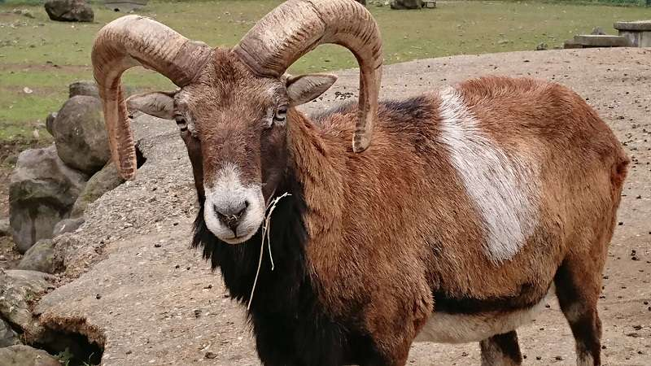
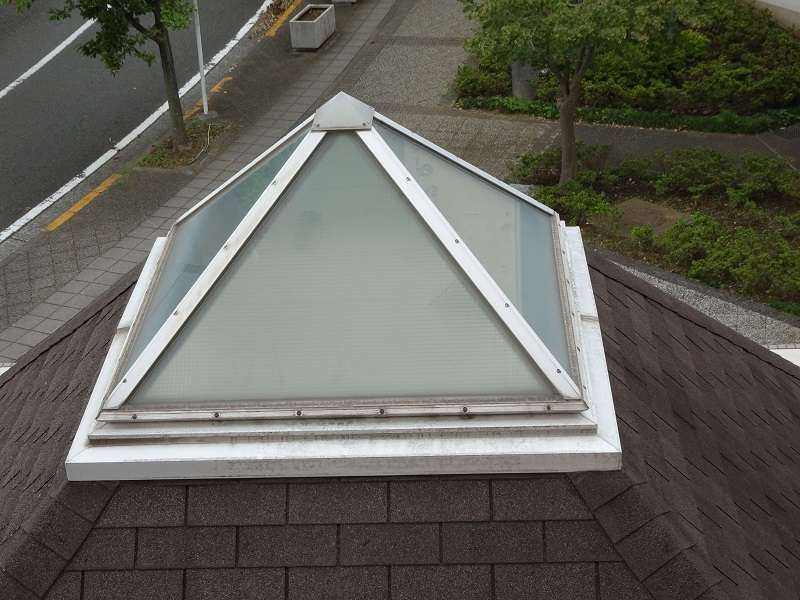
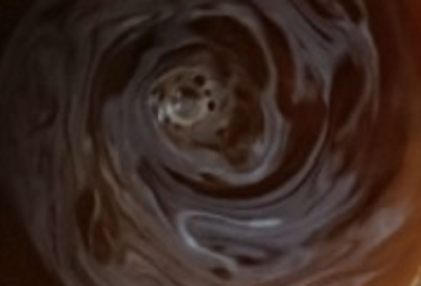
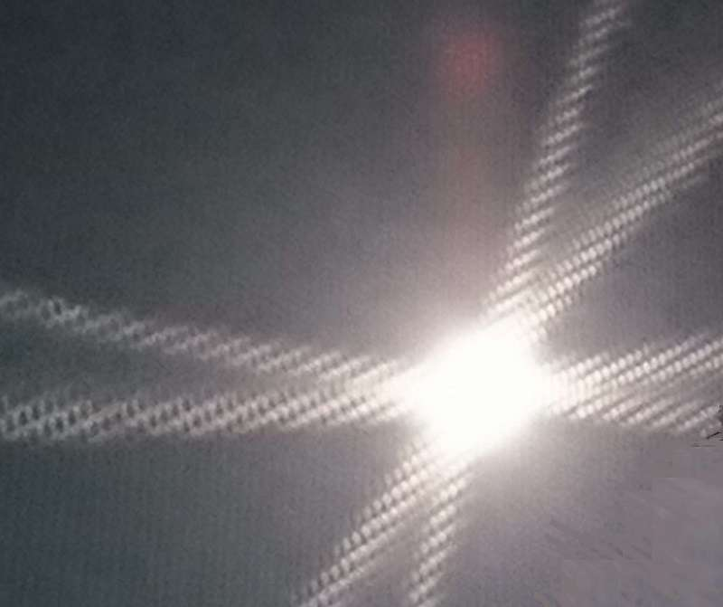
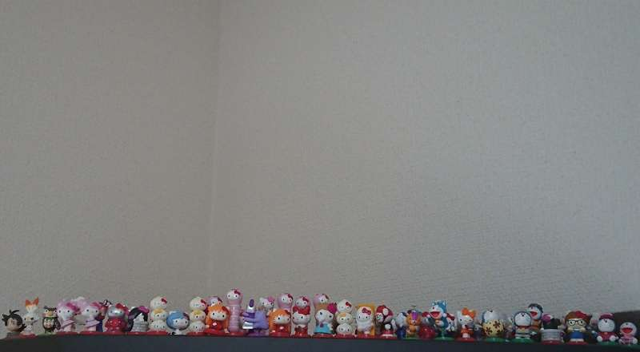
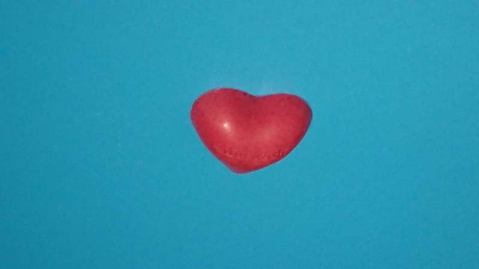
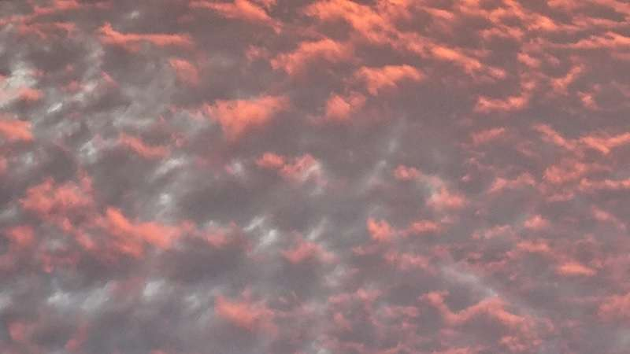
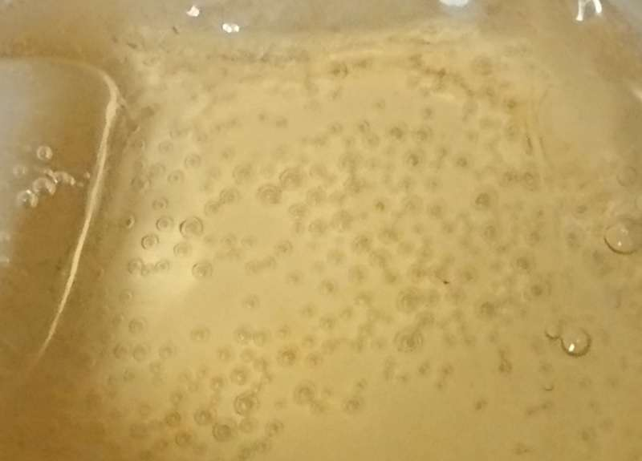

僕は牛の仲間だよ
ムフロンという名前の 偶蹄目ウシ科だよ
こう見えて山岳地帯の岩場を上り下り出来るよ
ひずめが偶数だから偶蹄目らしい
最近の遺伝子解析でクジラと近い仲間なんだって
まあ 大きい範囲で言えば同じ哺乳類だし
系統発生的にも繋がりがあって 人も同じ仲間なんだね
本質は仲間 そこから派生するのは様々な個性だね
宗教も思想も科学も本質は仲間で そこから多様性が生まれる
お互いの個性がぶつかって切磋琢磨するのはいいけど
「唯一 我こそは」って 井の中の蛙的で とんだ お笑いぐさだね
そんなわけで僕は道草をしながら草でも食べるとしよう
こんな物が気になったりして
最近 エジプトのサッカラで古代の棺が100基以上
像が40体 発見されたらしい
長年発掘してきて さらに新たな発見があるなんて
本当にワクワクが尽きないね
これからも色々な仮説や新説が 生まれるだろうね
2500年以上前でも保存状態は極めて良いとの事
高貴な身分で 繊細な装飾も 確認された
つくづく文化や技術の影響力が
世界に蓄積されて表現されていくのがわかる
自然に生物としてのヒトの脳に
地層の様になのか 螺旋状の様になのか
記憶され 違う物と 交わり 表出されていくんだね
まだまだ ワクワク フンコロガシの玉のように
だんだん 大きくなっていくのが 楽しみだね
混沌から始まる
宇宙は混沌から始まった
量子真空の小さな揺らぎが
インフレーションする この理論によれば
短い時間に 次々と どんどんと大きくなって
10-44乗秒後に始まり 10-34乗秒後に終了したらしい
10-34乗cm から何と 1cmになったらしい
そして何と その短い時間に
量子真空にあった１つの統一した力から 重力が分かれた
さらに 強い力(核力)が分かれ
そして 電磁力と 弱い力も分かれた
何の事だか 良く分らないけれど
些細なことから 宇宙は出来た
ちょっとした アンバランスな 揺らぎから生まれた
ずっと安定していたら ずっと同じだった
でも 私達は 混沌の中から生まれてきたね
何の為なんだろう？
時空が生まれたとされる
急激な指数関数的な膨張のため
熱も無かったとされるインフレーションが
0から10-34秒後には灼熱のビッグバンになり
温度1028乗度 とにかく凄い熱さだ
無から有が生まれ 相転移した結果らしい
統一した力から分かれた力の影響で
ヒックス場に弱く作用する物と強く作用する物ができ
何の事だかピンとこないが 場と熱の相互作用で
クオークが誕生し 量子真空から時空物質に相転移し
10-6乗秒後に野球ボール大の灼熱のビッグバンは
クオーク,電子,光子の素粒子が 押し合いへし合う
液状のプラズマ状態であったと実験の結果推定された
まったく特徴の異なる相転移って 不思議だね
冷たい氷から柔らかな水 そして 目に見えない水蒸気
真実は不思議だ そして常識では考えられない
無いようで あって 有るけど 見えない 幻想かな？
エッセンシャルな生活
自分にとってエッセンシャルなライフスタイルとは何か
今更だけど そこの所を考え見つめるのは
必要なことで 大事なことなのかも知れない
社会性と個性 その両方が生き生きする
これからの地球環境 国際関係 パーソナルな生活
そんな様々な多様性を うっすら感じながら
どんなパラダイムシフトがあっても
本質は変わらないんだろうな
私の中には 何がある
ブループラネットからレッドプラネットに思いを寄せて
人類の新たな旅路が始まる
おそらく険しく 大いなる忍耐を覚悟して
心の望むままに 意志を力にして
パーサビアランスローバーは 凜として
イシディス平原西のジェゼロクレーターに着陸した
7つの観測機器を駆使して
35億年前の水環境での微生物の痕跡を求め
約30の岩石サンプルを持ち帰る計画だ
大気組成が 二酸化炭素95％ 窒素3％
但し 大気圧は地球の1％以下
表面温度平均ー63℃ 重力は地球の40％位
生命誕生のゴルディロックス条件の範囲だろうか
いずれにしても大いなる一歩が始まる

火星人誕生
人類の飽くなき探求
レッドプラネットに居住区をつくり
資源開発 環境制御 植物プラント
ブループラネットが我が故郷だとする人々が
居住空間を増やし 快適さを高めていく
月の1/3位のジャガイモの様なフォボスは
西から東へ4時間で沈むらしい
かけらの様なダイモスは60時間かけて西へ沈む
そんな2つの衛星を見て育つ人が現われる
何世紀か掛けてテラフォーミング出来れば
この地 グリーンプラネットが
人類の多様なる未来の礎となる
無知と未知を知る旅
系外惑星探査の第1拠点として
グリーンプラネット(火星居住空間)は
今までとは全く違った 新たな感覚の連続だ
地球人であり地球生命体である真実を知る
系内最終拠点をテラフォーミングし いよいよ系外に出る
人類の祖先がボノボから別れて700万年位
恐竜が中生代を生きた 1億5000万年間
天変地異を避けることは出来なかったが
人類は恐竜より長く繁栄することが出来るのだろうか
肉眼では見えない宇宙微生物や放射性粒子など
見えない物がほとんどの真実
生命存在可能な宇宙空間の中で
もしかして 稀有の生命存在だったら
稀有な生命体を宇宙へ届けるのが
備えられし本来の目的なのか
